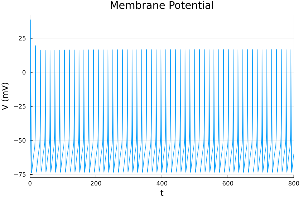

Example 7: Calcium Dynamics & Nernst Potentials
This example introduces the Calcium dynamics machinery of MTKNeuralToolkit. Real neurons maintain low intracellular Calcium, but voltage-gated Calcium channels (CaV) allow Calcium ions to flow in during spikes. This influx is tracked by a CalciumTracker pool, which slowly decays back to baseline.
Crucially, CaVChannel does not use a fixed reversal potential. It dynamically calculates the Calcium Nernst potential based on the current intracellular Calcium concentration. We also include a Calcium-activated potassium channel (KCa) which uses the Calcium pool to modulate its gating.
using MTKNeuralToolkit
using ModelingToolkit: mtkcompile, @named
using OrdinaryDiffEq
using PlotsDefine Gating Dynamics
We use standard HH gates for Na and K (fast spiking)
hh_na_m = v -> (
0.1 .* (v .+ 40.0) ./ (1.0 .- exp.(-(v .+ 40.0) ./ 10.0)),
4.0 .* exp.(-(v .+ 65.0) ./ 18.0)
)
hh_na_h = v -> (
0.07 .* exp.(-(v .+ 65.0) ./ 20.0),
1.0 ./ (1.0 .+ exp.(-(v .+ 35.0) ./ 10.0))
)
sodium_gates = [GateSpec(:m, 3, 0.052, hh_na_m), GateSpec(:h, 1, 0.596, hh_na_h)]
hh_k_n = v -> (
0.01 .* (v .+ 55.0) ./ (1.0 .- exp.(-(v .+ 55.0) ./ 10.0)),
0.125 .* exp.(-(v .+ 65.0) ./ 80.0)
)
potassium_gates = [GateSpec(:n, 4, 0.317, hh_k_n)]1-element Vector{GateSpec{Int64, Float64, Main.var"#8#9"}}:
GateSpec{Int64, Float64, Main.var"#8#9"}(:n, 4, 0.317, Main.var"#8#9"())Define a simple CaV channel gate using InfTau
CaV_m_inf(v) = 1.0 ./ (1.0 .+ exp.(-(v .+ 20.0) ./ 5.0))
CaV_tau_m(v) = 5.0 .+ 10.0 ./ (1.0 .+ exp.((v .+ 20.0) ./ 10.0))
CaV_dynamics = InfTau(CaV_m_inf, CaV_tau_m)
cav_gates = [GateSpec(:mCaV, 3, 0.0, CaV_dynamics)]1-element Vector{GateSpec{Int64, Float64, MTKNeuralToolkit.var"#InfTau##0#InfTau##1"{typeof(Main.CaV_m_inf), typeof(Main.CaV_tau_m)}}}:
GateSpec{Int64, Float64, MTKNeuralToolkit.var"#InfTau##0#InfTau##1"{typeof(Main.CaV_m_inf), typeof(Main.CaV_tau_m)}}(:mCaV, 3, 0.0, MTKNeuralToolkit.var"#InfTau##0#InfTau##1"{typeof(Main.CaV_m_inf), typeof(Main.CaV_tau_m)}(Main.CaV_m_inf, Main.CaV_tau_m))Define a KCa channel gate. It depends on BOTH voltage and Calcium! Note the two arguments: (v, ca). We use the InfTauCa helper for this.
KCa_m_inf(v, ca) = (ca ./ (ca .+ 3.0)) ./ (1.0 .+ exp.(-(v .+ 20.0) ./ 5.0))
KCa_tau_m(v) = 20
KCa_dynamics = InfTauCa(KCa_m_inf, KCa_tau_m)
kca_gates = [GateSpec(:mKCa, 4, 0.0, KCa_dynamics)]1-element Vector{GateSpec{Int64, Float64, MTKNeuralToolkit.var"#InfTauCa##0#InfTauCa##1"{typeof(Main.KCa_m_inf), typeof(Main.KCa_tau_m)}}}:
GateSpec{Int64, Float64, MTKNeuralToolkit.var"#InfTauCa##0#InfTauCa##1"{typeof(Main.KCa_m_inf), typeof(Main.KCa_tau_m)}}(:mKCa, 4, 0.0, MTKNeuralToolkit.var"#InfTauCa##0#InfTauCa##1"{typeof(Main.KCa_m_inf), typeof(Main.KCa_tau_m)}(Main.KCa_m_inf, Main.KCa_tau_m))Build the Compartment
top = Scalar()Scalar()Standard channels
@named cap = Capacitor(topology=top, C=1.0)
@named na = GenericChannel(topology=top, g=100.0, E_rev=50.0, gates=sodium_gates)
@named k = GenericChannel(topology=top, g=36.0, E_rev=-77.0, gates=potassium_gates)
@named leak= GenericChannel(topology=top, g=0.3, E_rev=-54.4, gates=GateSpec[])Model leak:
Subsystems (2): see hierarchy(leak)
p
n
Equations (6):
4 standard: see equations(leak)
2 connecting: see equations(expand_connections(leak))
Unknowns (6): see unknowns(leak)
v(t)
i(t)
p₊v(t)
p₊i(t)
⋮
Parameters (2): see parameters(leak)
g
E_revCalcium channel. Note we don't pass Erev! We pass Caout and nernstfactor. nernstfactor = (RT)/(zF) ~ 13.0 at room temp for natural log. The conversion_factor scales the current into a Ca2+ concentration rate.
@named cav = CaVChannel(topology=top, g=2.0, gates=cav_gates, Ca_out=3000.0,
nernst_factor=13.0, conversion_factor=0.047)Model cav:
Subsystems (3): see hierarchy(cav)
p
n
ca_port
Equations (11):
8 standard: see equations(cav)
3 connecting: see equations(expand_connections(cav))
Unknowns (11): see unknowns(cav)
v(t)
i(t)
mCaV(t)
mCaV_alpha(t)
⋮
Parameters (4): see parameters(cav)
g
conversion_factor
Ca_out
nernst_factorKCa channel
@named kca = KCaChannel(topology=top, g=5.0, E_rev=-80.0, gates=kca_gates)Model kca:
Subsystems (3): see hierarchy(kca)
p
n
ca_port
Equations (11):
8 standard: see equations(kca)
3 connecting: see equations(expand_connections(kca))
Unknowns (11): see unknowns(kca)
v(t)
i(t)
mKCa(t)
mKCa_alpha(t)
⋮
Parameters (2): see parameters(kca)
g
E_revCalcium Tracker: sets the baseline intracellular Ca and the decay rate
ion_config = CalciumTracker(decay=200.0, Ca_init=0.05)
neuron = build_compartment(cap, [na, k, leak, cav, kca];
name=:neuron,
V_init=-65.0,
topology=top,
ion_config=ion_config)Compartment{NoMorphology, NoGeometry, Float64}(Model neuron:
Subsystems (11): see hierarchy(neuron)
cap
injector
syn_injector
p
⋮
Equations (78):
55 standard: see equations(neuron)
23 connecting: see equations(expand_connections(neuron))
Unknowns (76): see unknowns(neuron)
cap₊v(t)
cap₊i(t)
cap₊p₊v(t)
cap₊p₊i(t)
⋮
Parameters (14): see parameters(neuron)
cap₊C
na₊g
na₊E_rev
k₊g
⋮, (V = neuron₊cap₊v(t), p_pin = Model neuron₊p:
Equations (2):
2 connecting: see equations(expand_connections(neuron₊p))
Unknowns (2): see unknowns(neuron₊p)
v(t)
i(t), n_pin = Model neuron₊n:
Equations (2):
2 connecting: see equations(expand_connections(neuron₊n))
Unknowns (2): see unknowns(neuron₊n)
v(t)
i(t), I_ext = neuron₊injector₊I₊u(t), I_syn = neuron₊syn_injector₊I₊u(t), cap_name = :cap), -65.0, Scalar(), NoGeometry(), NoMorphology())Build and Simulate the Network
drivers = [(1, 15.0)] # Current to elicit spikes and Calcium transients
net = build_acausal_network([neuron]; drivers=drivers, name=:ca_neuron)
println("Compiling Calcium neuron...")
sys = mtkcompile(net.sys)
prob = ODEProblem(sys, [], (0.0, 800.0), jac=true, sparse=true)
println("Solving...")
sol = solve(prob, Rosenbrock23(), reltol=1e-4, abstol=1e-4)retcode: Success
Interpolation: specialized 2nd order "free" stiffness-aware interpolation
t: 6513-element Vector{Float64}:
0.0
0.0026168578713252045
0.029362799664320184
0.05610874145731516
0.1111429206743994
0.16617709989148366
0.2526212395777522
0.34017856706354904
0.45677934152544014
0.5748474791065165
⋮
796.7666942386372
797.1557062601713
797.5580027824451
797.972261075669
798.3976791815139
798.8328889345472
799.276780827127
799.7278848597064
800.0
u: 6513-element Vector{Vector{Float64}}:
[0.05, 0.052, 0.596, 0.317, 0.0, 0.0, -65.0]
[0.04999934578981211, 0.052011567107476425, 0.5959998293541863, 0.31700046650119124, 2.6568294146696426e-10, 2.1768283123285067e-8, -64.96135243253306]
[0.04999265983891146, 0.052266861064376696, 0.5959743492763413, 0.3170214290606691, 3.0983247563955297e-9, 2.538520191344654e-7, -64.57004978943614]
[0.0499859747820613, 0.052754294139467944, 0.595905604468146, 0.3170717984250723, 6.155369953563858e-9, 5.043228442327103e-7, -64.18522157052607]
[0.049972221988817705, 0.05437684660295089, 0.5956288502365671, 0.31726669721089845, 1.3205472995569996e-8, 1.0819933635946954e-6, -63.411996663388415]
[0.049958472979421936, 0.056708554522991596, 0.5951696417070373, 0.31758323621454515, 2.139679253205364e-8, 1.7533230467855584e-6, -62.661393008127405]
[0.04993688455899229, 0.06150328932057417, 0.594080174919151, 0.31832146468711664, 3.690381956551363e-8, 3.024783779286685e-6, -61.52084842988435]
[0.04991502764273024, 0.06752856776034584, 0.5925120347554386, 0.31936595760411146, 5.653344204992496e-8, 4.635556113528328e-6, -60.40314577686862]
[0.0498859354691776, 0.0770593908038208, 0.5896816002026237, 0.3212153100375676, 9.02408235198852e-8, 7.404891242860654e-6, -58.95001197807191]
[0.049856494462269876, 0.08835661357885485, 0.5859077775897716, 0.32362622164924254, 1.358078470094925e-7, 1.1155440354642835e-5, -57.4825947423315]
⋮
[13.940192025267836, 0.04060274282124376, 0.33924317276265864, 0.4716048735129093, 0.07386006304160236, 0.18458031173369188, -66.7273066081985]
[13.943175065173433, 0.0452200938883969, 0.3525634858176436, 0.4598301520416057, 0.07243881838374504, 0.17982692692371913, -65.80961005429587]
[13.943678107848307, 0.05045004111334985, 0.3643168408581549, 0.44939438762448775, 0.07099814684295315, 0.17503755526598605, -64.87380687827923]
[13.94168998197717, 0.05628229591039496, 0.37438187401550255, 0.4403881208235429, 0.0695450147952351, 0.17023649093781154, -63.93441160756987]
[13.937239332152082, 0.06269234441410557, 0.38268612593786716, 0.43285162206771566, 0.06808422892381047, 0.16544043361704416, -63.00326987139271]
[13.930394186136036, 0.06963188305784197, 0.3891788489445267, 0.4267999928646624, 0.06662222982429579, 0.16067103855554887, -62.090766320152454]
[13.921251237966143, 0.07704932476199938, 0.3938480340407094, 0.4222097039792464, 0.0651641954913138, 0.1559453739358034, -61.20323909760502]
[13.909940161829164, 0.08489104092482481, 0.3967077653593187, 0.41903284392537615, 0.06371610008415889, 0.1512826434700874, -60.34403532407576]
[13.902217953184849, 0.08978579979916261, 0.397563752627037, 0.41778552128505736, 0.06285871818655873, 0.14853651266408785, -59.84236857386797]Plot the Results
Let's look at the voltage, the dynamic Calcium concentration, and the KCa current.
p1 = plot(sol, idxs=[sys.neuron.cap.v], title="Membrane Potential", ylabel="V (mV)", legend=false)
Access the internal calcium pool. The CalciumTracker creates a system named <compartment_name>_ca_pool, which contains the Ca variable.
p2 = plot(sol, idxs=[sys.neuron.neuron_ca_pool.Ca], title="Intracellular Calcium", ylabel="[Ca] (uM)", legend=false)
p3 = plot(sol, idxs=[sys.neuron.kca.i], title="KCa Current", ylabel="I (mA)", xlabel="Time (ms)", legend=false)
plot(p1, p2, p3, layout=(3,1), size=(800, 900))
This page was generated using Literate.jl.